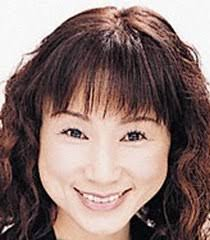

Minako Arakawa is a Japanese voice actress.
- Gender: Female
- Birthday: May 11, 1959
- Hometown: Osaka, Japan

|

|
|---|
| |
Minako Arakawa is a Japanese voice actress.
|
 |
|---|
 |
Fletcher Tringham | Fullmetal Alchemist | Fletcher Tringham is Russell's younger brother. He is good friends with Alphonese. He and his brother specialized in plant life alchemy. |